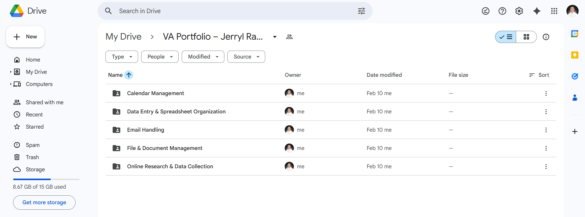

Project Overview
This project demonstrates my ability to design and implement a structured
File & Document Management System to improve organization, accessibility,
and operational efficiency within a digital workspace.
Operational Problem
Unstructured file storage and inconsistent naming conventions often lead to
misplaced documents, duplicated files, delayed retrieval, and workflow
confusion. Without a standardized system, productivity and accountability
are affected.
Solution
- Designed a clear and scalable folder hierarchy structure
- Implemented standardized file naming conventions
- Categorized documents based on function and department
- Created logical subfolder grouping for faster retrieval
- Established version control format for document updates
Process Implementation
- Audited existing files and identified redundancy
- Reorganized documents into structured master folders
- Renamed files using professional naming standards (YYYY-MM-DD format)
- Ensured consistent categorization across all folders
- Improved searchability and access workflow
Results & Impact
- Reduced file retrieval time significantly
- Eliminated duplicate and misplaced documents
- Improved team collaboration and document tracking
- Created a scalable system adaptable to business growth
Project Preview
Preview of the structured folder hierarchy and naming system implementation.

View Full File Structure